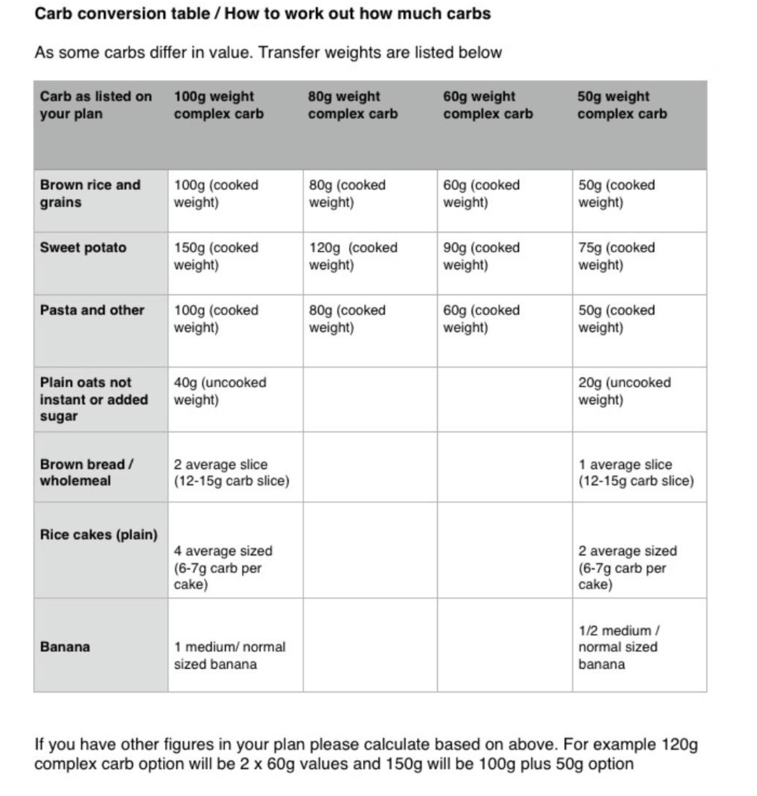

Complex carbs
COMPLEX CARB OPTIONS
Options in weight as listed on your plan (not carb value)
All complex carb options it’s better to choose brown or unrefined but the white version is okay
- Oats (40g dry weight = 100g other complex carb cooked)
- Brown rice
- Brown Basmati rice
- White Basmati rice (add extra 50g cooked for every 100g brown rice)
- Potato – types inc sweet and white
- Quinoa
- Pasta (Wholewheat / brown pasta preferred over white but white is ok)
- Rice
- Pasta
- Lentils
- Buckwheat
- Cous Cous
- Yams
- Beans
*** All above in COOKED weights apart from Oats (See conversion table for quantities)
OTHER
Rice cakes Average sized brown bread Half average sized slice of Rye bread (Carb value should be 15g per half slice) one serving of fruit once per day (fruits for guidelines)
